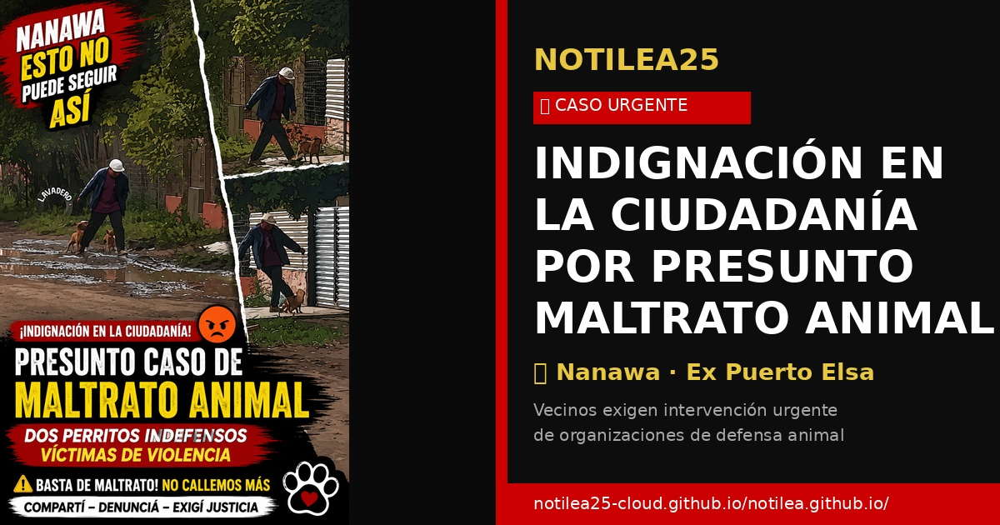

Inundaciones 2026: El reporte crítico

El fenómeno de El Niño 2026 entrará en su fase de madurez a mediados de junio. Según la proyección de la NOAA y el DMH Paraguay, se espera un acumulado de lluvia que superará los promedios históricos en un 40%.
Ciudades en Riesgo Máximo:
- Asunción: El Bañado Sur y Norte enfrentan desplazamientos masivos.
- Alberdi: El muro de contención será puesto a prueba tras 5 años de relativa calma.
- Pilar: Sistema de bombeo requiere mantenimiento urgente antes de septiembre.
Análisis: La economía paraguaya, dependiente de la agroexportación por vía fluvial, sufrirá retrasos logísticos significativos si los pasos críticos del río se vuelven innavegables por el exceso de corriente.